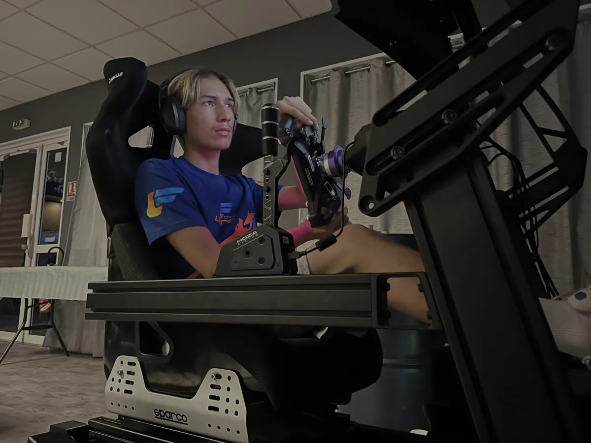

VCE ESPORT / RACE CONTROL TEAM
← Retour STAFFExercices disponibles10 modèles
Attributions partagées—
SynchronisationVérification…
STAFF / COACHING
CRÉER UN ENTRAÎNEMENT

Prépare un exercice et définis les objectifs du pilote.
« Attribuer au pilote » publie la séance sur son profil. « Enregistrer un brouillon » la conserve uniquement sur cet appareil. Un compte STAFF est nécessaire pour publier.
ENTRAÎNEMENTS PRÉPARÉS & ATTRIBUTIONS
Brouillons enregistrés sur cet appareil.